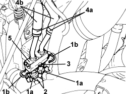

2130A36 <x>AUTOMATIC TRANSMISSION FLUID COOLING CIRCUIT THERMOSTAT VALVE - R&R</x>
- Path
- Procedures > 21 GEARBOX UNIT > 2130 AUTOMATIC TRANSMISSION WITH DIFFERENTIAL > 2130A AUTOMATIC TRANSMISSION ASSEMBLY > 2130A36 <x>AUTOMATIC TRANSMISSION FLUID COOLING CIRCUIT THERMOSTAT VALVE - R&R</x>
- Kind
- repair procedure (removal / refitting; the operation number is the code)
- Applies to
- engines: 2.4 JTD 20v; all production periods
- Interactive page
- https://sloeber94.github.io/elrnDB-fCrm/en/#/194004013
Applies to: engines: 2.4 JTD 20v; all production periods
 Removing
Removing
 Refitting
Refitting- Position the vehicle on a lift.
Op. 5530B52 BATTERY SUPPORT/DRIP TRAY - R.R
Op. 7055B54 UNDER ENGINE PROTECTION/GUARD - R.R.
1. Lower the protective collars (1a) and release the retaining clips (1b).
2. Disconnect the pipes from the thermostatic valve for the automatic transmission fluid cooling circuit.
3. Undo the bolt fixing the automatic transmission fluid cooling circuit thermostatic valve.
4. Loosen the bands (4a) using the tool and disconnect the pipes (4b) from the automatic transmission fluid cooling circuit thermostatic valve.
Tool | Description | Function | Validity |
|---|---|---|---|
1881138000 | Caliper | Removing bands | 2.4 JTD 20V |
5. Keep the automatic transmission fluid cooling circuit thermostatic valve.

Applies to: engines: 2.4 JTD 20v; all production periods
Refitting
Removing- Plac the automatic transmission fluid cooling circuit thermostatic valve in its housing and secure it using the bolt.
- Connect the pipes to the automatic transmission fluid cooling circuit thermostatic valve and tighten the bands.
- Connect the pipes to the automatic transmission fluid cooling circuit thermostatic valve and fasten them using the retaining clips.
Op. 5530B52 BATTERY SUPPORT/DRIP TRAY - R.R
Op. 0010T45 AUTOMATIC TRANSMISSION FLUID CHECK LEVEL AND TOP UP IF NECESSARY
Op. 7055B54 UNDER ENGINE PROTECTION/GUARD - R.R.
- Remove the vehicle from the lift.